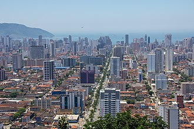

Santos
Com cerca de 420 mil habitantes, a maior cidade do litoral paulista tem IDHM de 0,840. De 2000 a 2010, o componente do índice no qual o município apresentou maior evolução foi a Educação, com crescimento de 0,093. Na Economia, Santos se destaca por abrigar o maior porto da América Latina, responsável por abastecer, principalmente, os estados de São Paulo, Minas Gerais, Goiás, Mato Grosso e Mato Grosso do Sul. O turismo da cidade, naturalmente, também está vinculado às suas praias. Os jardins da orla de Santos formam o maior jardim frontal de praia em extensão do mundo.
A cidade é sede de três clubes, sendo o de maior destaque o Santos Futebol Clube, que é reconhecido internacionalmente, possuindo entre suas principais conquistas três Copas Libertadores da América e dois títulos Mundiais Interclubes, além de oito títulos de Campeão Brasileiro. Joga no Estádio Urbano Caldeira, mais conhecido como "Vila Belmiro". Os outros dois clubes são a Associação Atlética Portuguesa (conhecida popularmente como Portuguesa Santista), que joga no Estádio Ulrico Mursa, e o Jabaquara Atlético Clube que joga no Estádio Espanha. Esses três clubes realizam os clássicos do futebol de Santos quando se confrontam.
